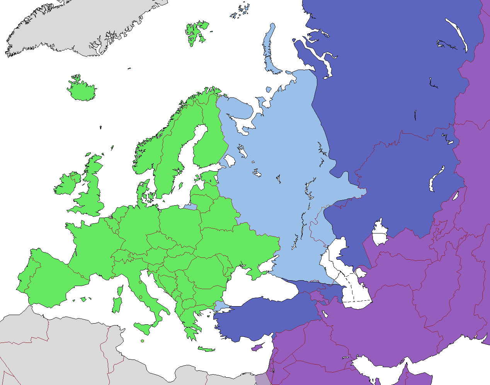

SNU Universe > Galaxies > The Milky Way > Earth > Europe >
Select a country
Albania
Andorra
Armenia
Austria
Azerbaijan
Belarus
Belgium
Bosnia and Herzegovina
Bulgaria
Croatia
Cyprus
Czech Republic
Denmark
EuroRussia (Russia part 1)
Estonia
Finland
France
Georgia
Germany
Greece
Hungary
Iceland
Ireland
Italy
Kazakhstan
Latvia
Liechtenstein
Lithuania
Luxembourg
Malta
Moldova
Monaco
Montenegro
Netherlands
North Macedonia
Norway
Poland
Portugal
Romania
Russia (Russia part 1) alt link
San Merino
Serbia
Slovakia
Slovenia
Spain
Sweden
Switzerland
Turkey (Part 1)
Ukraine
United Kingdom (UK)
Vatican City
View older versions of this page
Snapshots 1 to 10
Snapshot 1
Snapshot 2
Snapshot 3
Snapshot 4
Snapshot 5
Snapshot 6
Snapshot 7
Snapshot 8
Snapshot 9
Snapshot 10
Snapshots 11 to 20
Snapshot 11
Snapshot 12
Snapshot 13
Snapshot 14
Snapshot 15
Snapshot 16
Snapshot 17
Snapshot 18
Snapshot 19
Snapshot 20
You have reached the bottom of this page.